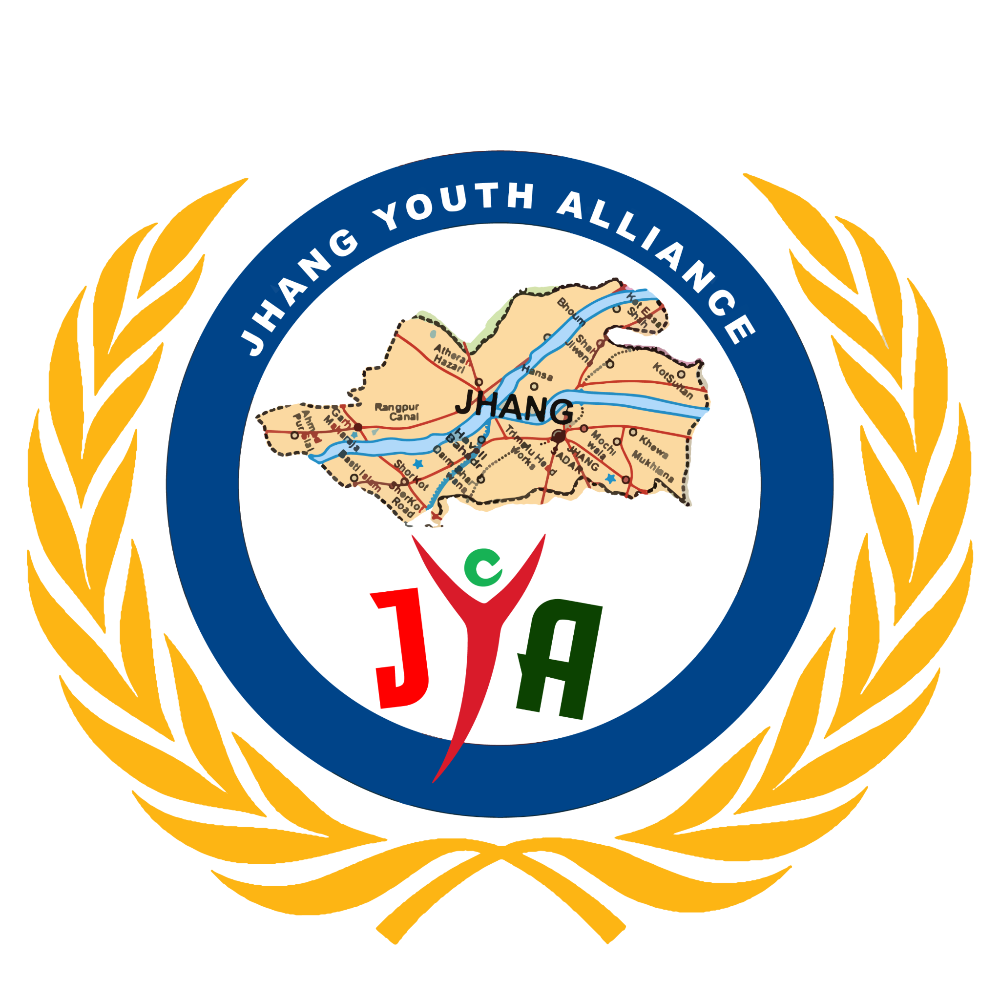

Youth Leadership
Encouraging young people to take initiative and contribute constructively.
A youth platform dedicated to leadership, education, community development and volunteerism in Jhang.

Jhang Youth Alliance is a community-oriented platform dedicated to the people of Jhang, encouraging youth leadership, education, volunteerism, awareness and positive community participation.
Encouraging young people to take initiative and contribute constructively.
Promoting learning, awareness and access to useful opportunities.
Supporting volunteerism, social responsibility and local initiatives.
This membership and volunteer form is intended for people from Jhang.